Objectives
These are sample solutions to the exercises set in the labs in the session Designing classes (Spacebook).
Exercises
Exercise 1
- Create 5 User objects on the object bench:
- Select name, email address and password of your choice for each.
- Or choose the names as shown in Table 1.
- Tablulate on paper the friendship relationships depicted in Figure 1.
- The partially completed table is shown in Figure 1.
- Use the object bench to represent the friendship relationships.
- For example since bart is a friend of marge:
- select marge on the object bench and invoke befriend(bart).
- continue until all the friendship relationships as shown in Figure 1 are established.
- For example since bart is a friend of marge:
- Verify correct implementation of the friendship network using existing User class method(s)
- Select name, email address and password of your choice for each.
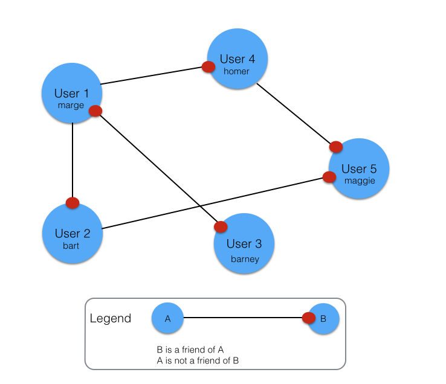
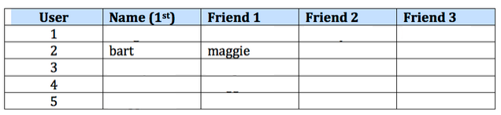
Exercise 1 Solution
You could manually create the 5 User objects by clicking on the User class diagram and invoking the User constructor for each object (see Figure 2) 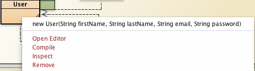
An alternative and possibly quicker method would be to use the UserTest class as follows:
- Open UserTest in editor
- Add and simulaneously initialize 5 User fields (see Figure 3) 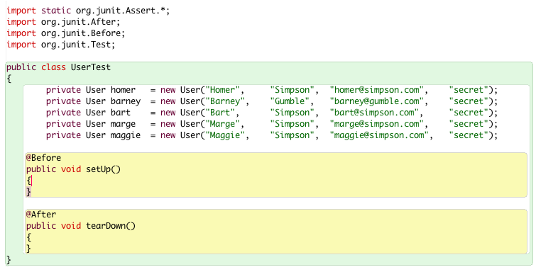
- Compile UserTest
- Invoke Test Fixture to Object Bench on UserText
- This will position the 5 User objects on the object bench 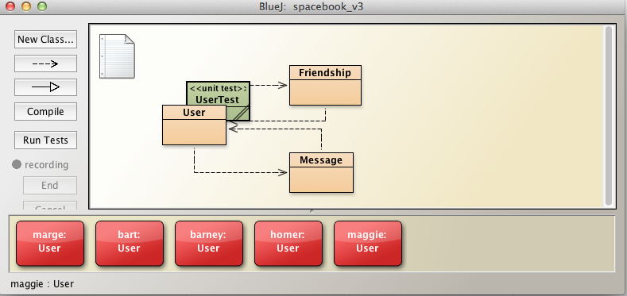
Tabular representation of User-Friendship relationships depicted here in Figure 5.
- The table may be created by observing the network of relationships portrayed in Figure 1 above. 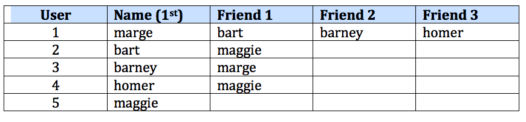
Represent (implement) the friendship relationships using the objects on the object bench:
- Marge first, followed by the others:
- Right click on User marge and invoke befriend
- befriend bart
- Repeat for barney and homer (see Figure 6). 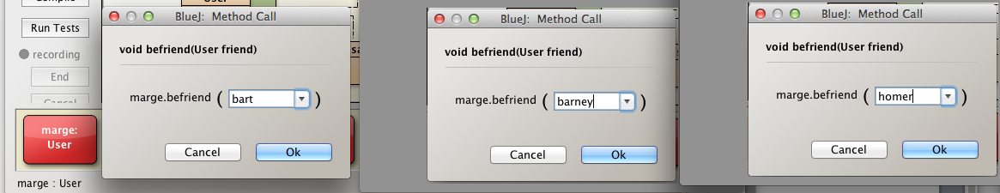
- Check friends have been created:
- Invoke displayFriends on User marge:
- Check the correct list of friends displayed (Figure 7). 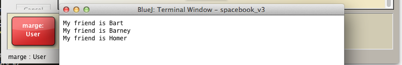
- Right click on User marge and invoke befriend
- Repeat the above steps for Bart, Barney, Homer and Maggie.
- Bart: see Figure 8: 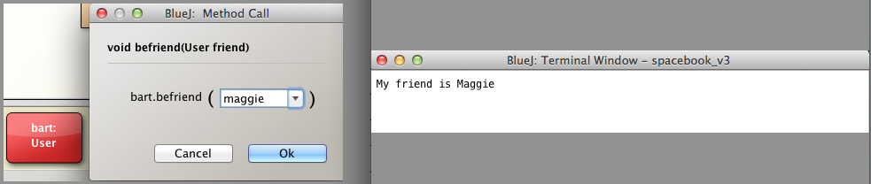
- Barney: see Figure 8: 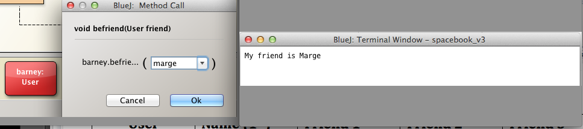
- Homer: see Figure 8: 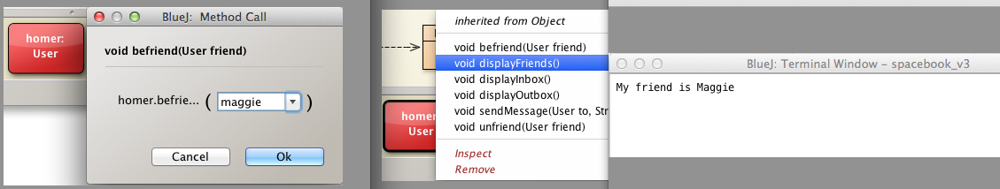
- Maggie: see Figure 8: 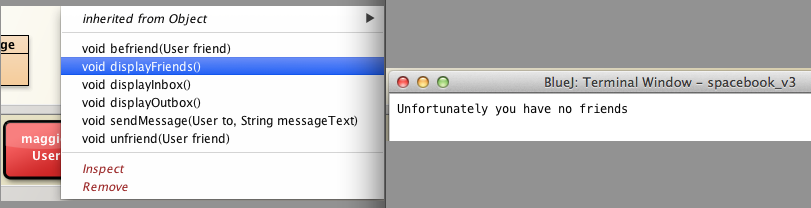
Exercises
Exercise 2
Recall that it is possible for a user to befriend itself. For example, you could
- create a User object bart and
- invoke befriend on bart
- using bart as a parameter
- invoking displayFriends on bart will demonstrate he has succeeded in befriending himself (see Figure 2). 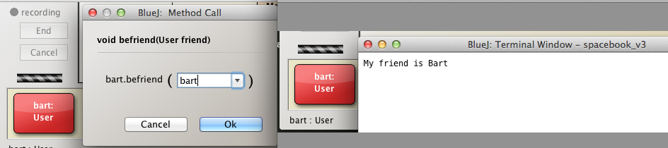
- This Exercise requires you to modify the method befriend in User to disallow a user befriending oneself.
- Test the refactored method works as intended by invoking it
- Using the invoking object as the argument, that is, attempting to befriend oneself
- Using an object other than the invoking object to establish a friendship.
- Test the refactored method works as intended by invoking it
Exercise 2 Solution
Here is the existing method befriend:
public void befriend(User friend)
{
Friendship friendship = new Friendship(this, friend);
friendships.add(friendship);
}Here is the same method but refactored to prevent a user befriending oneself:
public void befriend(User friend)
{
if(!(friend == this))
{
Friendship friendship = new Friendship(this, friend);
friendships.add(friendship);
}
else
{
System.out.println("Opps! You seem to have made a mistake in attempting to befriend yourself");
}
}Test 1 : Attempt befriending oneself
- Remove all friends from marge
- Invoke befriend on User marge using marge as argument.
- This action should fail (see Figure 3).
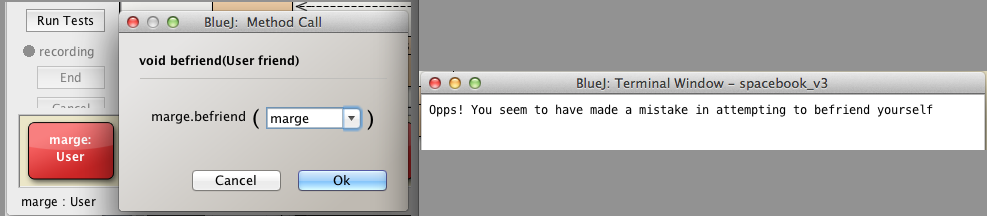
Test 2 : Attempt befriending other user
- Ensure that marge has no friends
- if necessary invoke unfriend to remove any that may be present
- Invoke befriend on User marge using bart as argument.
- Display marge friends to verify refactored befriend still functions correctly (see Figure 4)

- Display marge friends to verify refactored befriend still functions correctly (see Figure 4)
Exercises
Exercise 3
Presently a user can remove a specific friend from its list of friendships by invoking unfriend.
- Write a method that would allow a user to remove all friends.
- Use the signature: public void unfriendAll()
Exercise 3 Solution
Simply use the ArrayList clear method.
public void unfriendAll()
{
friendships.clear();
}Test Solution
- Invoke Test Fixture to Object Bench
- As shown in Figure 1, User objects representing marge, bart, barney, homer and maggie will be placed on the object bench.
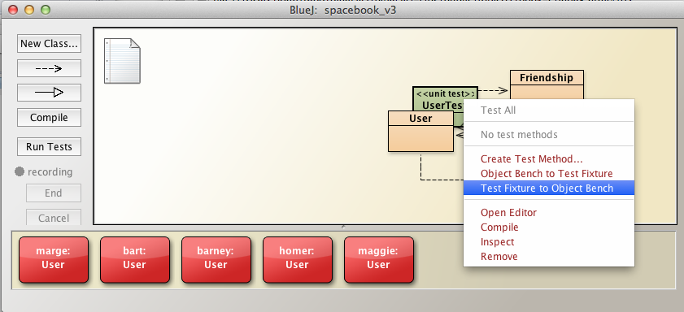
By invoking befriend, create 3 friends for User marge
- bart
- barney
- homer
Invoke displayFriends to verify these friends have been created (see Figure 2):
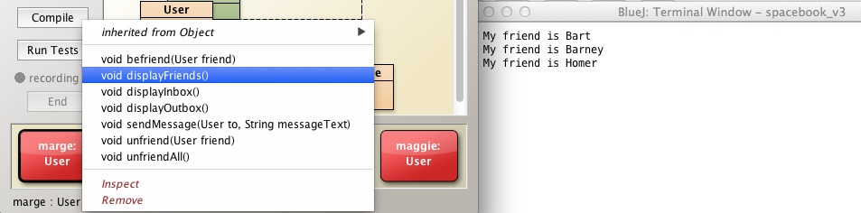
- Test the new method unfriendAll by invoking it on User marge
- Then invoke displayFriends to verify method works as intended (see Figure 3):
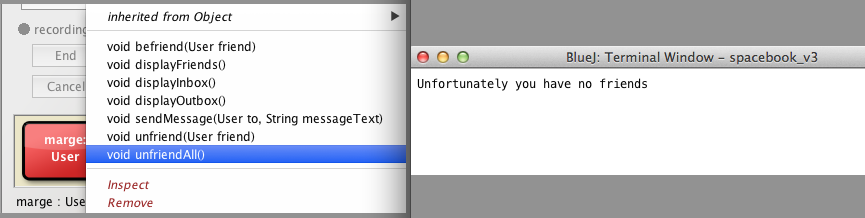
Alternative solutions
Other solutions are possible as described and illustrated as follows:
- unfriendAll_3 fails because it is illegal to attempt changes to the array within enhanced for loop.
- Study Figure 7 to understand why the method unfriendAll_4 fails.
/**
* homer dumps all his friends...
* ...in several different ways
*/
public void unfriendAll_1()
{
// count down: counting up would not work as friendships.size changes
// with each iteration, reducing by one each time.
for (int i = friendships.size() - 1; i >= 0; i -= 1)
{
friendships.remove(i);
}
}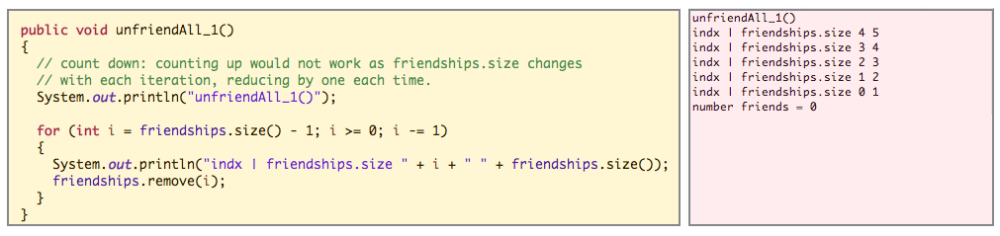
public void unfriendAll_2()
{
Iterator<Friendship> it = friendships.iterator();
while (it.hasNext())
{
it.next();
it.remove();
}
}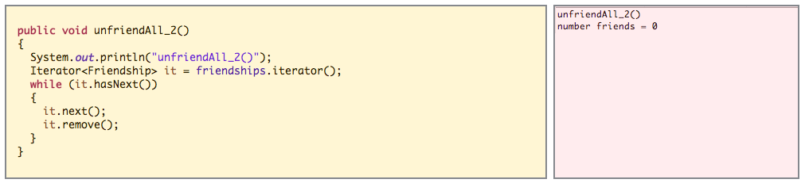
public void unfriendAll_3()
{
for (Friendship friendship : friendships)
{
friendships.remove(friendship);
}
}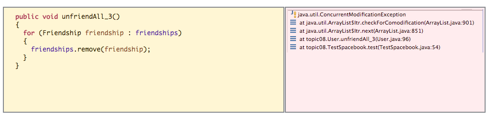
public void unfriendAll_4()
{
for (int i = 0; i < friendships.size(); i += 1)
{
friendships.remove(i);
}
}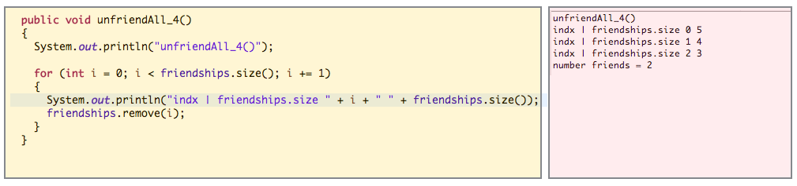
Exercises
Exercise 4
- Introduce additional fields in User as follows:
int age;
String nationality;- Modify the overloaded constructor to includes parameters representing these fields.
- Apply this signature:
- public User(String firstName, String lastName, int age, String nationality, String email, String password)
- Apply this signature:
- Initialize the new fields within the constructor.
Exercise 4 Solution
Here is an extract from User class that contains the additional fields and the new overloaded constructor:
public class User
{
String firstName;
String lastName;
int age;
String nationality;
String email;
String password;
ArrayList<Friendship> friendships = new ArrayList<>();
ArrayList<Message> inbox = new ArrayList<>();
ArrayList<Message> outbox = new ArrayList<>();
public User(String firstName, String lastName, int age, String nationality, String email, String password)
{
this.firstName = firstName;
this.lastName = lastName;
this.age = age;
this.nationality= nationality;
this.email = email;
this.password = password;
}
...
...
}Test
- Add the new code
- Compile the class
- Instantiate the class using the new overloaded constructor as depicted in Figure 1. 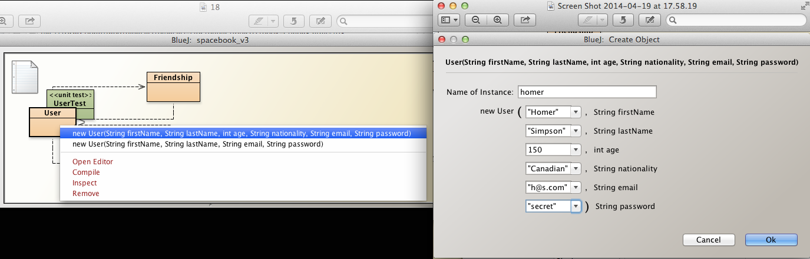
- Inspect the object state using the inspector (see Figure 2).
- Verify the state matches the data you input. 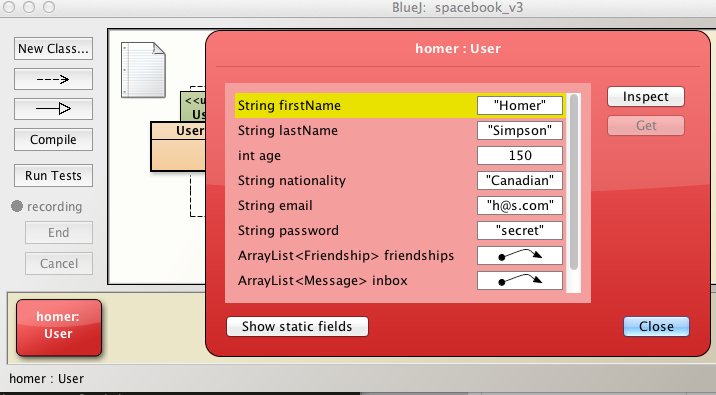
Exercises
Exercise 5
- Introduce a method to broadcast a message from a particular user to all its friends.
- The signature of the method is:
- public void broadcastMessage(String messageText)
- Test the method as follows:
- Use the UserTest as previously (or other methods) to populate the object bench with 5 User objects.
- The network of friendships established in Exercise 1 should be present.
- Marge has befriended Bart, Barney and Homer:
- Marge broadcasts a message
- Check Marge's outbox
- Check the inbox of the intended recipients.
- The signature of the method is:
Exercise 5 Solution
This Exercise is solved by
- composing the text of a common message destined for the target group
- this would be done in testing
- traversing the friendships list and for each element:
- invoke the existing sendMessage method with the appropriate parameters:
- target user
- this is obtained from the friendship object
- message text
- target user
- invoke the existing sendMessage method with the appropriate parameters:
public void broadcastMessage(String messageText)
{
for(Friendship f : friendships)
{
sendMessage(f.targetUser, messageText);
}
}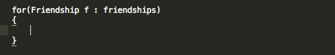
Test
- Follow the steps in Exercise 1 to create 5 User objects on the object bench with the same network of friendships as depicted in Figure 1 in Exercise 1.
- Marge broadcasts to her friends: 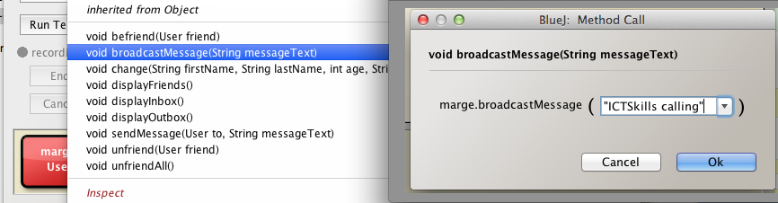
- Check Marge's outbox and observe the message objects have been added: 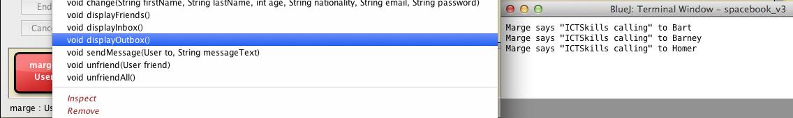
- Check inbox of targets, namely Bart, Barney and Homer:
- Each should have received Marge's broadcast message
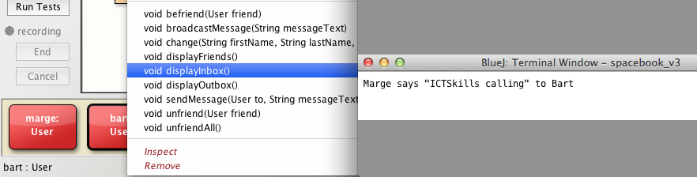